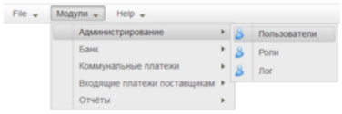
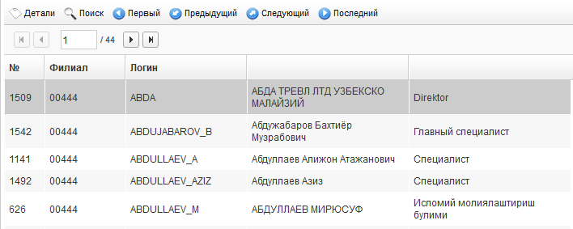
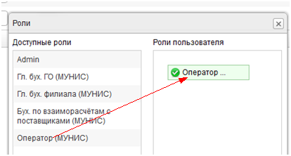

Для открытия модуля платежей нужно воспользоваться пунктом меню «Модули \ Коммунальные платежи \ Платежи» (см. Рисунок 1).

Рисунок 1
При выборе указанного пункта меню открывается список пользователей (см. Рисунок 2).
Внимание! Список содерживает учётные записи пользователей, зарегистрированных в системе IS Smart Bank. Редактирование аттрибутов учётных записей пользователей также производится только в системе IS Smart Bank.

Рисунок 2
Для просмотра карточки пользователя, нужно дважды кликнуть мышкой по выбранной записи списка . Вид карточки учётной записи пользователя предствален на Рисунке 3:

Рисунок 3
Чтобы назначить пользователю роли в системе "МУНИС", нужно нажать кнопку  . Затем в открывшемся окне из списка "Доступные роли" "перетащить" мышкой нужную запись в список "Роли пользователя" и отпустить кнопку мышки. (см. Рисунок 4). Роль сразу же прикрепляется к текущему ользователю, и дальнейшего сохранения не требуется.
. Затем в открывшемся окне из списка "Доступные роли" "перетащить" мышкой нужную запись в список "Роли пользователя" и отпустить кнопку мышки. (см. Рисунок 4). Роль сразу же прикрепляется к текущему ользователю, и дальнейшего сохранения не требуется.
